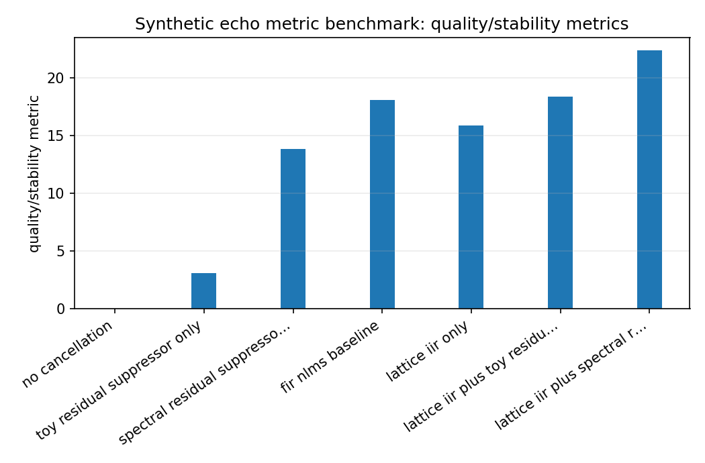
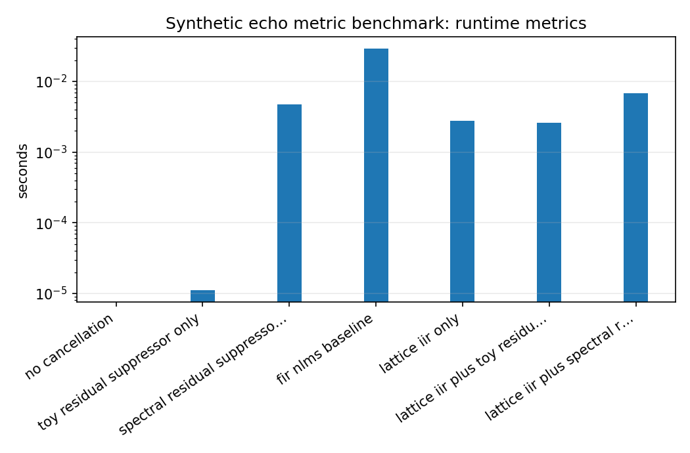

Synthetic echo metric benchmark¶
Tutorial goal
Compare synthetic echo-path metrics across simple baselines and lattice-based variants.
Note
New to the terminology? See the lattice DSP concept map and the causality/data-use guide for how online, offline, block, and MIMO examples should be read.
Context¶
This benchmark is included to exercise metrics such as ERLE and residual MSE on a controlled synthetic problem. It is not an acoustic echo cancellation product benchmark.
Key idea and equations¶
ERLE is
How to read the result¶
Use ERLE and MSE only within this controlled synthetic setup; do not compare the numbers to production AEC systems.
Run command¶
python benchmarks/echo_cancellation_benchmark.py --samples 16000 --sample-rate 16000 --repeats 1 --output docs/benchmarks/generated/_artifacts/echo_metric/echo-metric.json
Run status¶
Return code: 0
Visual and data readout¶
When the benchmark gallery is built with results, this page embeds PNG summaries generated from the same JSON/CSV artifacts. The raw data stay available below as downloads so exact numbers remain reproducible without making the public page read like console output.
Figures¶
{kind=link}

echo_metric_quality_summary.png¶
{kind=link}

echo_metric_runtime_summary.png¶
Generated data files¶
Source code¶
1"""Small synthetic echo-cancellation metric benchmark.
2
3The goal is to expose ERLE/MSE behavior for adaptive filters on a controlled
4echo-like problem. This is not a production AEC benchmark. It compares no
5cancellation, a simple FIR/NLMS baseline, lattice/IIR only, and small
6dependency-free residual suppressor baselines.
7"""
8
9from __future__ import annotations
10
11import argparse
12import json
13import platform
14import statistics
15import time
16from collections.abc import Callable
17from pathlib import Path
18from typing import Any
19
20import numpy as np
21
22from lattice_dsp import (
23 HAS_OPENMP,
24 HybridEchoCanceller,
25 SpectralResidualSuppressor,
26 echo_metrics,
27 generate_echo_problem,
28 residual_attenuator,
29)
30
31
32def time_call(fn: Callable[[], Any], repeats: int) -> tuple[Any, dict[str, float]]:
33 timings: list[float] = []
34 value: Any = None
35 for _ in range(repeats):
36 start = time.perf_counter()
37 value = fn()
38 timings.append(time.perf_counter() - start)
39 return value, {
40 "min_s": min(timings),
41 "median_s": statistics.median(timings),
42 "max_s": max(timings),
43 }
44
45
46def fir_nlms(
47 reference: np.ndarray,
48 desired: np.ndarray,
49 *,
50 order: int = 64,
51 mu: float = 0.5,
52 epsilon: float = 1e-8,
53) -> tuple[np.ndarray, np.ndarray, np.ndarray]:
54 """Small FIR/NLMS baseline implemented in NumPy/Python."""
55
56 if order <= 0:
57 raise ValueError("order must be positive")
58 x = np.asarray(reference, dtype=np.float64)
59 d = np.asarray(desired, dtype=np.float64)
60 if x.ndim != 1 or d.ndim != 1 or x.shape != d.shape:
61 raise ValueError("reference and desired must be equally shaped 1-D arrays")
62
63 w = np.zeros(order, dtype=np.float64)
64 xbuf = np.zeros(order, dtype=np.float64)
65 y = np.zeros_like(x)
66 e = np.zeros_like(x)
67 for n, sample in enumerate(x):
68 xbuf[1:] = xbuf[:-1]
69 xbuf[0] = sample
70 y_n = float(np.dot(w, xbuf))
71 e_n = float(d[n] - y_n)
72 norm = float(np.dot(xbuf, xbuf) + epsilon)
73 w += (mu * e_n / norm) * xbuf
74 y[n] = y_n
75 e[n] = e_n
76 return y, e, w
77
78
79def summarize_case(
80 name: str,
81 microphone: np.ndarray,
82 enhanced: np.ndarray,
83 clean_target: np.ndarray,
84 timing: dict[str, float] | None = None,
85) -> dict[str, float | str]:
86 metrics = echo_metrics(microphone, enhanced, clean_target).as_dict()
87 row: dict[str, float | str] = {"name": name, **metrics}
88 if timing:
89 row.update(timing)
90 return row
91
92
93def run_benchmark(args: argparse.Namespace) -> dict[str, Any]:
94 # Backward-compatible defaults for tests or callers that construct the
95 # Namespace manually instead of using ``build_parser``.
96 for name, default in {
97 "spectral_frame_size": 512,
98 "spectral_hop_size": None,
99 "spectral_floor": 0.08,
100 "spectral_over_subtract": 1.25,
101 "spectral_noise_percentile": 20.0,
102 "spectral_smoothing": 0.65,
103 "spectral_exponent": 1.0,
104 "spectral_mode": "echo_aware",
105 "spectral_echo_aware_strength": 0.85,
106 "spectral_reference_key": "echo_estimate",
107 }.items():
108 if not hasattr(args, name):
109 setattr(args, name, default)
110
111 problem = generate_echo_problem(
112 samples=args.samples,
113 sample_rate=args.sample_rate,
114 seed=args.seed,
115 nonlinear_strength=args.nonlinear_strength,
116 nonlinearity=args.nonlinearity,
117 near_end_power_ratio=args.near_end_power_ratio,
118 noise_snr_db=args.noise_snr_db,
119 double_talk=not args.no_double_talk,
120 )
121
122 cases: list[dict[str, float | str]] = []
123 cases.append(
124 summarize_case(
125 "no_cancellation",
126 problem.microphone,
127 problem.microphone,
128 problem.clean_target,
129 {"min_s": 0.0, "median_s": 0.0, "max_s": 0.0},
130 )
131 )
132
133 residual_only, residual_only_timing = time_call(
134 lambda: residual_attenuator(problem.microphone, gain=args.residual_gain),
135 args.repeats,
136 )
137 cases.append(
138 summarize_case(
139 "toy_residual_suppressor_only",
140 problem.microphone,
141 residual_only,
142 problem.clean_target,
143 residual_only_timing,
144 )
145 )
146
147 spectral_processor = SpectralResidualSuppressor(
148 frame_size=args.spectral_frame_size,
149 hop_size=args.spectral_hop_size,
150 floor=args.spectral_floor,
151 over_subtract=args.spectral_over_subtract,
152 noise_percentile=args.spectral_noise_percentile,
153 smoothing=args.spectral_smoothing,
154 exponent=args.spectral_exponent,
155 mode=args.spectral_mode,
156 echo_aware_strength=args.spectral_echo_aware_strength,
157 reference_key=args.spectral_reference_key,
158 )
159 spectral_only, spectral_only_timing = time_call(
160 lambda: spectral_processor(
161 problem.microphone,
162 {
163 "sample_rate": args.sample_rate,
164 "reference": problem.reference,
165 },
166 ),
167 args.repeats,
168 )
169 cases.append(
170 summarize_case(
171 "spectral_residual_suppressor_only",
172 problem.microphone,
173 spectral_only,
174 problem.clean_target,
175 spectral_only_timing,
176 )
177 )
178
179 fir_result, fir_timing = time_call(
180 lambda: fir_nlms(
181 problem.reference,
182 problem.microphone,
183 order=args.fir_order,
184 mu=args.fir_mu,
185 epsilon=args.epsilon,
186 ),
187 args.repeats,
188 )
189 _, fir_residual, fir_weights = fir_result
190 cases.append(
191 summarize_case(
192 "fir_nlms_baseline",
193 problem.microphone,
194 fir_residual,
195 problem.clean_target,
196 fir_timing,
197 )
198 )
199
200 def make_canceller(*, residual_mode: str | None = None) -> HybridEchoCanceller:
201 processor = None
202 if residual_mode == "toy":
203
204 def processor(residual: np.ndarray, context: dict[str, Any]) -> np.ndarray:
205 return residual_attenuator(residual, gain=args.residual_gain)
206
207 elif residual_mode == "spectral":
208 processor = spectral_processor
209 elif residual_mode is not None:
210 raise ValueError(f"unknown residual_mode: {residual_mode}")
211
212 return HybridEchoCanceller(
213 initial_reflection=[0.0] * args.iir_order,
214 initial_taps=[0.0] * (args.iir_order + 1),
215 mu_taps=args.mu_taps,
216 mu_reflection=args.mu_reflection,
217 epsilon=args.epsilon,
218 reflection_update_period=args.reflection_update_period,
219 scale_reflection_mu_by_period=not args.no_scale_reflection_mu_by_period,
220 residual_processor=processor,
221 sample_rate=args.sample_rate,
222 )
223
224 def run_lattice_only() -> Any:
225 canceller = make_canceller()
226 return canceller.process(problem.reference, problem.microphone, clean_target=problem.clean_target)
227
228 lattice_result, lattice_timing = time_call(run_lattice_only, args.repeats)
229 cases.append(
230 summarize_case(
231 "lattice_iir_only",
232 problem.microphone,
233 lattice_result.residual,
234 problem.clean_target,
235 lattice_timing,
236 )
237 )
238
239 def run_hybrid() -> Any:
240 canceller = make_canceller(residual_mode="toy")
241 return canceller.process(problem.reference, problem.microphone, clean_target=problem.clean_target)
242
243 hybrid_result, hybrid_timing = time_call(run_hybrid, args.repeats)
244 cases.append(
245 summarize_case(
246 "lattice_iir_plus_toy_residual_suppressor",
247 problem.microphone,
248 hybrid_result.enhanced,
249 problem.clean_target,
250 hybrid_timing,
251 )
252 )
253
254 def run_spectral_hybrid() -> Any:
255 canceller = make_canceller(residual_mode="spectral")
256 return canceller.process(problem.reference, problem.microphone, clean_target=problem.clean_target)
257
258 spectral_hybrid_result, spectral_hybrid_timing = time_call(run_spectral_hybrid, args.repeats)
259 cases.append(
260 summarize_case(
261 "lattice_iir_plus_spectral_residual_suppressor",
262 problem.microphone,
263 spectral_hybrid_result.enhanced,
264 problem.clean_target,
265 spectral_hybrid_timing,
266 )
267 )
268
269 best = max(cases, key=lambda row: float(row["erle_db"]))
270 return {
271 "metadata": {
272 "python": platform.python_version(),
273 "platform": platform.platform(),
274 "has_openmp": HAS_OPENMP,
275 "samples": args.samples,
276 "sample_rate": args.sample_rate,
277 "seed": args.seed,
278 "repeats": args.repeats,
279 "nonlinearity": args.nonlinearity,
280 "nonlinear_strength": args.nonlinear_strength,
281 "near_end_power_ratio": args.near_end_power_ratio,
282 "noise_snr_db": args.noise_snr_db,
283 "iir_order": args.iir_order,
284 "fir_order": args.fir_order,
285 "reflection_update_period": args.reflection_update_period,
286 "scale_reflection_mu_by_period": not args.no_scale_reflection_mu_by_period,
287 "residual_gain": args.residual_gain,
288 "spectral_frame_size": args.spectral_frame_size,
289 "spectral_hop_size": args.spectral_hop_size,
290 "spectral_floor": args.spectral_floor,
291 "spectral_over_subtract": args.spectral_over_subtract,
292 "spectral_noise_percentile": args.spectral_noise_percentile,
293 "spectral_smoothing": args.spectral_smoothing,
294 "spectral_exponent": args.spectral_exponent,
295 "spectral_mode": args.spectral_mode,
296 "spectral_echo_aware_strength": args.spectral_echo_aware_strength,
297 "spectral_reference_key": args.spectral_reference_key,
298 "target_reflection": problem.reflection.tolist(),
299 "target_taps": problem.taps.tolist(),
300 "fir_weight_norm": float(np.linalg.norm(fir_weights)),
301 "final_lattice_reflection": lattice_result.reflection.tolist(),
302 "final_hybrid_reflection": hybrid_result.reflection.tolist(),
303 },
304 "cases": cases,
305 "best_by_erle": best,
306 }
307
308
309def build_parser() -> argparse.ArgumentParser:
310 parser = argparse.ArgumentParser(description=__doc__)
311 parser.add_argument("--samples", type=int, default=64_000)
312 parser.add_argument("--sample-rate", type=int, default=16_000)
313 parser.add_argument("--seed", type=int, default=1234)
314 parser.add_argument("--repeats", type=int, default=3)
315 parser.add_argument("--nonlinearity", choices=["none", "tanh", "cubic", "clipped"], default="tanh")
316 parser.add_argument("--nonlinear-strength", type=float, default=0.08)
317 parser.add_argument("--near-end-power-ratio", type=float, default=0.02)
318 parser.add_argument("--noise-snr-db", type=float, default=30.0)
319 parser.add_argument("--no-double-talk", action="store_true")
320 parser.add_argument("--iir-order", type=int, default=4)
321 parser.add_argument("--fir-order", type=int, default=64)
322 parser.add_argument("--fir-mu", type=float, default=0.5)
323 parser.add_argument("--mu-taps", type=float, default=0.05)
324 parser.add_argument("--mu-reflection", type=float, default=0.001)
325 parser.add_argument("--epsilon", type=float, default=1e-8)
326 parser.add_argument("--reflection-update-period", type=int, default=8)
327 parser.add_argument("--no-scale-reflection-mu-by-period", action="store_true")
328 parser.add_argument("--residual-gain", type=float, default=0.7)
329 parser.add_argument("--spectral-frame-size", type=int, default=512)
330 parser.add_argument("--spectral-hop-size", type=int, default=None)
331 parser.add_argument("--spectral-floor", type=float, default=0.08)
332 parser.add_argument("--spectral-over-subtract", type=float, default=1.25)
333 parser.add_argument("--spectral-noise-percentile", type=float, default=20.0)
334 parser.add_argument("--spectral-smoothing", type=float, default=0.65)
335 parser.add_argument("--spectral-exponent", type=float, default=1.0)
336 parser.add_argument("--spectral-mode", choices=["echo_aware", "blind"], default="echo_aware")
337 parser.add_argument("--spectral-echo-aware-strength", type=float, default=0.85)
338 parser.add_argument(
339 "--spectral-reference-key",
340 choices=["echo_estimate", "reference"],
341 default="echo_estimate",
342 help="Context signal used by echo-aware spectral residual suppression.",
343 )
344 parser.add_argument("--output", type=Path, default=Path("reports/echo-benchmark.json"))
345 return parser
346
347
348def main() -> None:
349 parser = build_parser()
350 args = parser.parse_args()
351 payload = run_benchmark(args)
352 print(json.dumps(payload, indent=2, sort_keys=True))
353 args.output.parent.mkdir(parents=True, exist_ok=True)
354 args.output.write_text(json.dumps(payload, indent=2, sort_keys=True) + "\n", encoding="utf-8")
355 print(f"Wrote {args.output}")
356
357
358if __name__ == "__main__":
359 main()